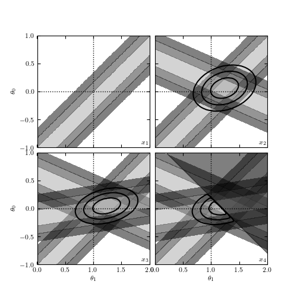
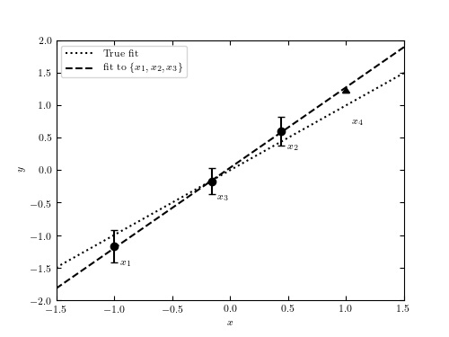

Inline Bayesian Linear Regression¶
Figure 8.1
An example showing the online nature of Bayesian regression. The upper panel shows the four points used in regression, drawn from the line y = theta_1 x + theta_0 with theta_1 = 1 and theta_0 = 0. The lower panel shows the posterior pdf in the (theta_1, theta_0) plane as each point is added in sequence. For clarity, the implied dark regions for sigma > 3 have been removed. The fourth point is an upper-limit measurement of y, and the resulting posterior cuts off half the parameter space.
 {kind=link}
{kind=link}
# Author: Jake VanderPlas
# License: BSD
# The figure produced by this code is published in the textbook
# "Statistics, Data Mining, and Machine Learning in Astronomy" (2013)
# For more information, see http://astroML.github.com
# To report a bug or issue, use the following forum:
# https://groups.google.com/forum/#!forum/astroml-general
import numpy as np
from matplotlib import pyplot as plt
from astroML.plotting.mcmc import convert_to_stdev
#----------------------------------------------------------------------
# This function adjusts matplotlib settings for a uniform feel in the textbook.
# Note that with usetex=True, fonts are rendered with LaTeX. This may
# result in an error if LaTeX is not installed on your system. In that case,
# you can set usetex to False.
if "setup_text_plots" not in globals():
from astroML.plotting import setup_text_plots
setup_text_plots(fontsize=8, usetex=True)
#------------------------------------------------------------
# Set up the data and errors
np.random.seed(13)
a = 1
b = 0
x = np.array([-1, 0.44, -0.16])
y = a * x + b
dy = np.array([0.25, 0.22, 0.2])
y = np.random.normal(y, dy)
# add a fourth point which is a lower bound
x4 = 1.0
y4 = a * x4 + b + 0.2
#------------------------------------------------------------
# Compute the likelihoods for each point
a_range = np.linspace(0, 2, 80)
b_range = np.linspace(-1, 1, 80)
logL = -((a_range[:, None, None] * x + b_range[None, :, None] - y) / dy) ** 2
sigma = [convert_to_stdev(logL[:, :, i]) for i in range(3)]
# compute best-fit from first three points
logL_together = logL.sum(-1)
i, j = np.where(logL_together == np.max(logL_together))
amax = a_range[i[0]]
bmax = b_range[j[0]]
#------------------------------------------------------------
# Plot the first figure: the points and errorbars
fig1 = plt.figure(figsize=(5, 3.75))
ax1 = fig1.add_subplot(111)
# Draw the true and best-fit lines
xfit = np.array([-1.5, 1.5])
ax1.plot(xfit, a * xfit + b, ':k', label='True fit')
ax1.plot(xfit, amax * xfit + bmax, '--k', label='fit to $\{x_1, x_2, x_3\}$')
ax1.legend(loc=2)
ax1.errorbar(x, y, dy, fmt='ok')
ax1.errorbar([x4], [y4], [[0.5], [0]], fmt='_k', lolims=True)
for i in range(3):
ax1.text(x[i] + 0.05, y[i] - 0.3, "$x_{%i}$" % (i + 1))
ax1.text(x4 + 0.05, y4 - 0.5, "$x_4$")
ax1.set_xlabel('$x$')
ax1.set_ylabel('$y$')
ax1.set_xlim(-1.5, 1.5)
ax1.set_ylim(-2, 2)
#------------------------------------------------------------
# Plot the second figure: likelihoods for each point
fig2 = plt.figure(figsize=(5, 5))
fig2.subplots_adjust(hspace=0.05, wspace=0.05)
# plot likelihood contours
for i in range(4):
ax = fig2.add_subplot(221 + i)
for j in range(min(i + 1, 3)):
ax.contourf(a_range, b_range, sigma[j].T,
levels=(0, 0.683, 0.955, 0.997),
cmap=plt.cm.binary, alpha=0.5)
# plot the excluded area from the fourth point
axpb = a_range[:, None] * x4 + b_range[None, :]
mask = y4 < axpb
fig2.axes[3].fill_between(a_range, y4 - x4 * a_range, 2, color='k', alpha=0.5)
# plot ellipses
for i in range(1, 4):
ax = fig2.axes[i]
logL_together = logL[:, :, :i + 1].sum(-1)
if i == 3:
logL_together[mask] = -np.inf
sigma_together = convert_to_stdev(logL_together)
ax.contour(a_range, b_range, sigma_together.T,
levels=(0.683, 0.955, 0.997),
colors='k')
# Label and adjust axes
for i in range(4):
ax = fig2.axes[i]
ax.text(1.98, -0.98, "$x_{%i}$" % (i + 1), ha='right', va='bottom')
ax.plot([0, 2], [0, 0], ':k', lw=1)
ax.plot([1, 1], [-1, 1], ':k', lw=1)
ax.set_xlim(0.001, 2)
ax.set_ylim(-0.999, 1)
if i in (1, 3):
ax.yaxis.set_major_formatter(plt.NullFormatter())
if i in (0, 1):
ax.xaxis.set_major_formatter(plt.NullFormatter())
if i in (0, 2):
ax.set_ylabel(r'$\theta_0$')
if i in (2, 3):
ax.set_xlabel(r'$\theta_1$')
plt.show()